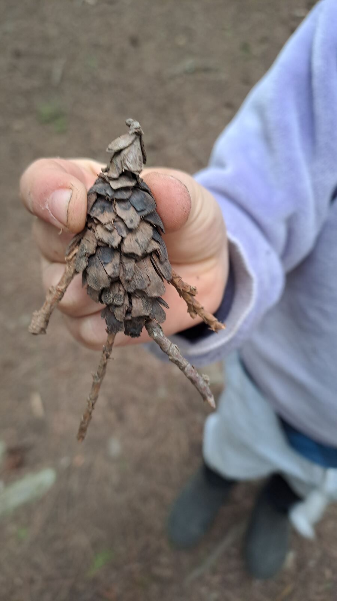
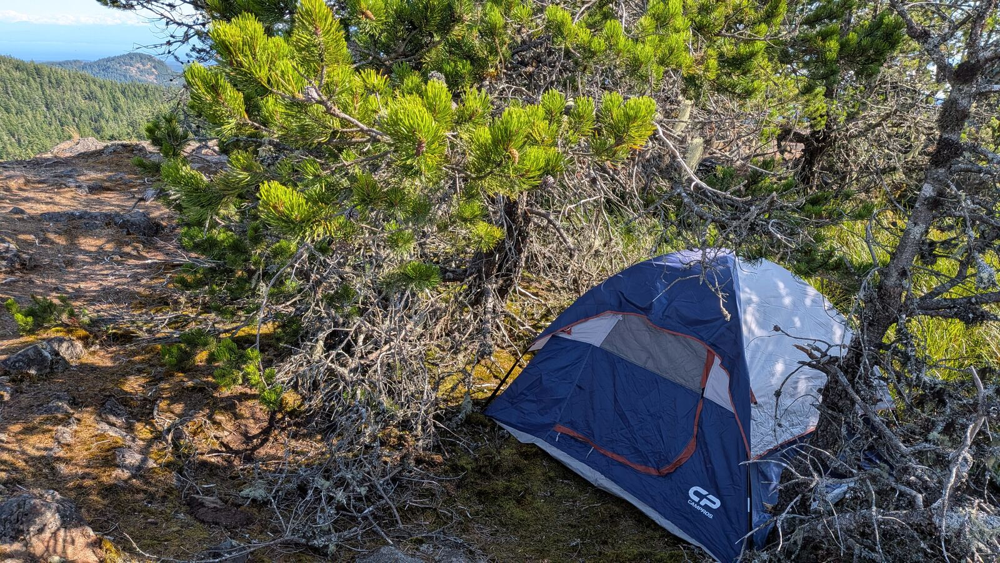

Magic Waters isn't a school, a business, or a spiritual path with a brand name. It's a field. Here's the declaration of what it is.
The Declaration
Magic Waters is a gameworld. Not a business, not a school, not a spiritual path wearing a brand name. A world with its own rules and roles, that people step into and bring alive by playing.
It's Gaian, which means it's played with the Earth herself, the actual planet, not an idea of her. And the aim is regeneration: leaving the land, the children, and the grown-ups who show up a little more alive than they found them.
What Holds It Together
Five threads run through everything Magic Waters does.
Real time outside, in real weather, is the ground everything else grows out of.
We're trying to raise children together, and support adults together, not alone.
Nobody runs this alone. It works because people bring their skills and show up for each other.
Skills, stories, and ways of seeing, passed on hand to hand rather than from a curriculum.
Marked transitions that ask something real of a person, and that the community recognizes.
Small to Large
Magic Waters is a space for initiations, for both children and adults. Some are small: a child learning how to safely carry and use a knife for the first time. Some are large: an adult going out alone into nature for four days, without food and without equipment, on a vision quest.
What connects them is the same thing. A real threshold, crossed on purpose, with a community on the other side of it.


Where the Field Lives Today
The field is bigger than any one program. Today, it shows up concretely as the Magic Waters Nature Immersion program. Children and families, meeting outdoors, every Friday in Sooke, BC.